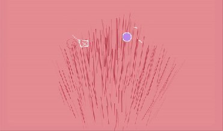
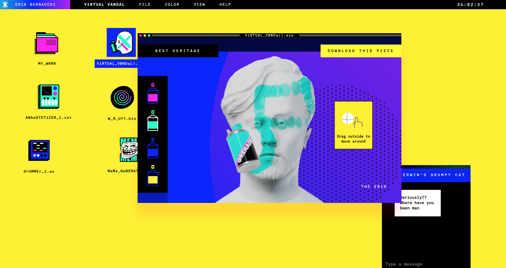

This week - Games and Sound
Looking at the way sound, illustration and interaction come together in games. A consistent
theme this semester. Particularly been interested in Alan Watts philosophy used in the game
everything.

Game
A game called bellwoods, also made for a gamejam, where you fly a kite through an audio experience.
Interesting example of procedural generation as well.

Site
Awesome portfolio site featuring lots of web illustration reflective of the medium itself.
Back Home